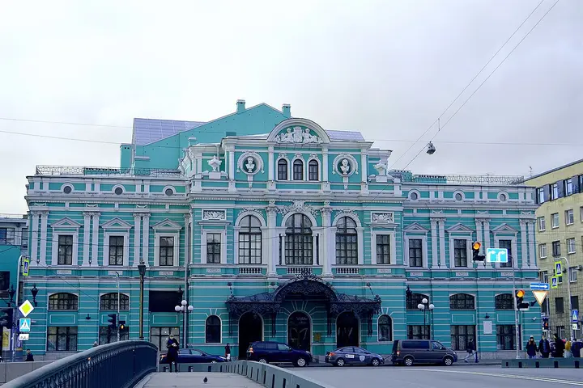

Подборку собрали 19 октября, прошедшие события скрыты. Свежая афиша — на главной

Фото: GAlexandrova, CC BY-SA 4.0 · Wikimedia Commons
Театр · Центр
БДТ им. Товстоногова
Один из главных драматических театров страны: смелые постановки и роскошный исторический зал.
- ₽₽ · 1 500–3 000 ₽ на человека
- Новое в каталоге
- 3 события в афише
Позвать сюда: БДТ им. ТовстоноговаОткрыть в каталоге: БДТ им. ТовстоноговаМаршрут до места: БДТ им. Товстоногова
Адрес и детали
- Адрес
- наб. реки Фонтанки, 65
Открыть на Яндекс Картах (в новой вкладке) - Метро
- м. Сенная площадь
- Район
- Центр
- Цена
- 1 500–3 000 ₽ на человека
- Проверено
- работает — проверили в октябре 2026
Афиша площадки 3
БДТ им. Товстоногова, Малая сцена · м. Сенная площадь · от 2 000 ₽ · 18+
Головоломка по пьесе Фредерика Соннтага: активисты, сценаристы и тайное правительство спорят о человеке, которого, возможно, никогда не было. Отсылка к Хичкоку.
Подробнее: Джордж КапланПозвать сюда: Джордж КапланБилеты : Джордж Каплан (страница с билетами, откроется в новой вкладке)
Фото: GAlexandrova, CC BY-SA 4.0 · Wikimedia Commons
БДТ им. Товстоногова, Основная сцена · м. Сенная площадь · 1 200–8 000 ₽ · 6+
Сказка для взрослых и детей по мотивам «Синей птицы»: Тильтиль и Митиль — ожившие пластилиновые человечки в мире детского рисунка. Вечером в 19:00, дневные показы в 15:00.
Подробнее: СчастьеПозвать сюда: СчастьеБилеты : Счастье (страница с билетами, откроется в новой вкладке)
Фото: GAlexandrova, CC BY-SA 4.0 · Wikimedia Commons
БДТ им. Товстоногова, Малая сцена · м. Сенная площадь · от 1 000 ₽ · 18+
Пьеса Кокто о последнем телефонном разговоре с ушедшим любимым звучит почти как камерная опера: актриса и рояль. 1,5 часа без антракта; 27 декабря начало в 18:00.
Подробнее: Человеческий голосПозвать сюда: Человеческий голосБилеты : Человеческий голос (страница с билетами, откроется в новой вкладке)
Фото: GAlexandrova, CC BY-SA 4.0 · Wikimedia Commons

Похожие рядом


Что ещё рядом

Как позвать
- Выбери план, место или событие — в карточке адрес, цены и маршрут в Яндекс Картах.
- Нажми «Позвать сюда» — соберётся приглашение-игра для свидания или голосование для компании.
- Отправь ссылку в любой мессенджер: тебе ответят, а компания отметит, куда и когда может. Бесплатно и без регистрации.